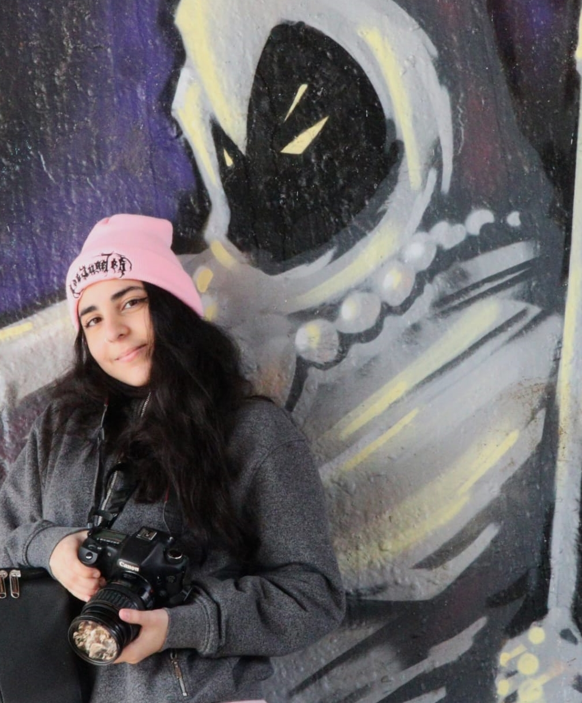

I'm an Interactive Media Design student at Algonquin College, and decided to carry on the family skill of photography! I have a Canon 7D camera, which used to be my sister's, and my dad's before her. I am passionate about nature and want to capture every view I see and share it with the world. as I like to say, every piece of art is a wonder to discover.
Some other hobbies I have are: Martial Arts, dancing, and gaming! Fun fact: I am also a Twitch streamer! I recently started graphic designing as well and would like to get better at it. But for now, I am practicing photography and more specifically, jewelry photography. I hope my work motivates you and inspires you to never give up.